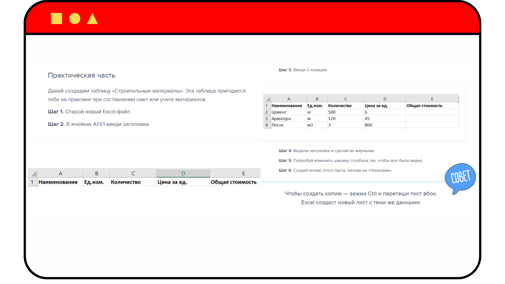
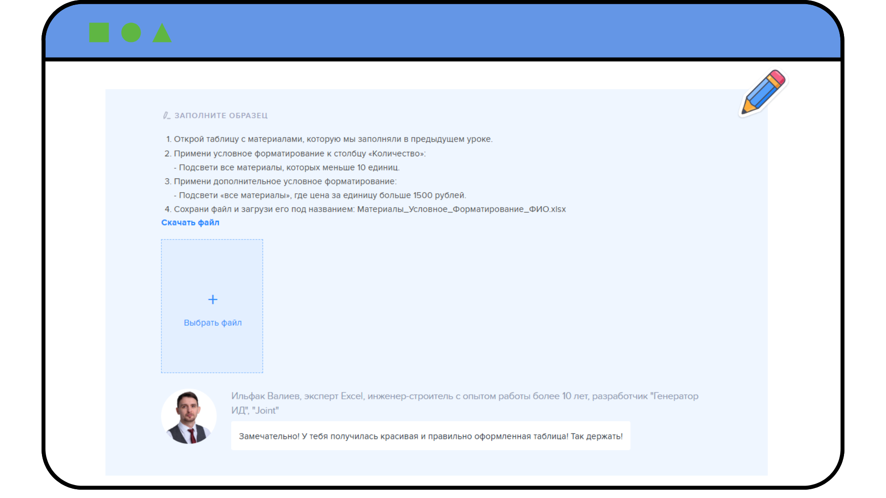

Возможности и польза обучения: как этот курс изменит твою работу

Андрей, привет и добро пожаловать на мой авторский курс повышения квалификации «Excel для инженеров-строителей: базовый уровень». В этом вводном уроке я расскажу тебе, как будет проходить обучение, и какие навыки ты получишь после его прохождения. Не воспринимай мое обращение на «ты» как фамильярность. Я решил так общаться со своими учениками, потому что считаю, что в нашей профессии это нормально.
Итак, давай знакомиться. Меня зовут Ильфак Валиев, я один из ведущих экспертов по автоматизации строительных расчетов, эксперт Excel, инженер-строитель с опытом работы более 10 лет и разработчик «Генератор ИД», «Joint». В этом курсе я буду делиться с тобой своими знаниями и умениями, как в свое время я упростил себе и коллегам работу с помощью Excel.
Автор курса – Ильфак Валиев – один из ведущих экспертов по автоматизации строительных расчетов, эксперт Excel, инженер-строитель с опытом работы более 10 лет и разработчик «Генератор ИД», «Joint»
Чему ты научишься
На моем курсе ты научишься уверенно использовать Excel, чтобы автоматизировать свою работу и снизить до нуля вероятность допущения ошибок в сложных расчетах.
Как будет проходить обучение
Все уроки курса на 70% состоят из практики. Теорию я буду давать в минимальном количестве и только в наглядной и доступной форме.
Вместо долгих видеоматериалов – наглядные гиф-инструкции и скриншоты с подсказками. Вот пример, как они выглядят.

После небольшого теоретического материала мы будем сразу переходить к практике. Первая практическая часть – это совместная работа. Я называю ее «Повтори за преподавателем». Мы будем работать в таком формате каждый урок.

В конце каждого урока необходимо выполнять интерактивные упражнения. Не пропускай их. Тренажеры помогут закрепить пройденный материал урока и успешно пройти итоговый тест с первого раза.
Проверьте свои текущие знания по работе с базовыми функциями Excel в интерактивном тренажере ниже
Прямо сейчас у вас есть возможность определить свой текущий уровень знаний по Excel. Для этого прочитайте утверждение и определите, верное оно или ложное.
Встроенный материал: Flipcard — открыть сохранённое содержание

Excel выдаст ошибку, если ввести «01.01.2025» в ячейку
- Правда
- Ложь
Пояснение источника: Excel распознает дату, если ввести «01.01.2025» в ячейку

Если текст в ячейке выравнивается по правому краю, то это формула
- Правда
- Ложь
Пояснение источника: Если текст в ячейке выравнивается по правому краю, то это дата

Формула в Excel начинается с «=»
- Правда
- Ложь
Пояснение источника: Формула в Excel начинается с «=»
После выполнения упражнений тебя будет ждать самая важная практическая часть урока – домашнее задание. Это твой итоговый проект по теме, который я лично проверю и предоставлю по нему индивидуальную обратную связь. А проверенный файл ты сможешь использовать в своей дальнейшей работе.

После обучения необходимо будет сдать финальный тест. За успешное прохождение теста ты получишь удостоверение установленного образца.
Кажется, я тебе все рассказал. Если у тебя еще остались вопросы о процессе обучения, ты можешь задать их по кнопке «Преподаватель» в правом нижнем углу. А я желаю тебе успехов и надеюсь, что обучение будет не только полезным, но и интересным.